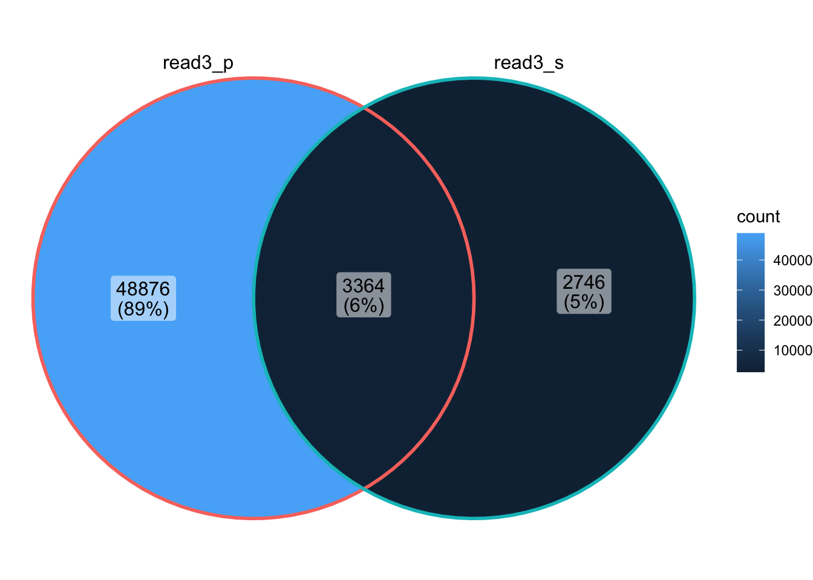

Last updated: 2022-03-16
Checks: 5 2
Knit directory: codemapper/
This reproducible R Markdown analysis was created with workflowr (version 1.6.2). The Checks tab describes the reproducibility checks that were applied when the results were created. The Past versions tab lists the development history.
The R Markdown file has unstaged changes. To know which version of the R Markdown file created these results, you’ll want to first commit it to the Git repo. If you’re still working on the analysis, you can ignore this warning. When you’re finished, you can run wflow_publish to commit the R Markdown file and build the HTML.
The global environment had objects present when the code in the R Markdown file was run. These objects can affect the analysis in your R Markdown file in unknown ways. For reproduciblity it’s best to always run the code in an empty environment. Use wflow_publish or wflow_build to ensure that the code is always run in an empty environment.
The following objects were defined in the global environment when these results were created:
| Name | Class | Size |
|---|---|---|
| install_codemapper | function | 1.2 Kb |
The command set.seed(20210923) was run prior to running the code in the R Markdown file. Setting a seed ensures that any results that rely on randomness, e.g. subsampling or permutations, are reproducible.
Great job! Recording the operating system, R version, and package versions is critical for reproducibility.
Nice! There were no cached chunks for this analysis, so you can be confident that you successfully produced the results during this run.
Great job! Using relative paths to the files within your workflowr project makes it easier to run your code on other machines.
Great! You are using Git for version control. Tracking code development and connecting the code version to the results is critical for reproducibility.
The results in this page were generated with repository version 193f2cb. See the Past versions tab to see a history of the changes made to the R Markdown and HTML files.
Note that you need to be careful to ensure that all relevant files for the analysis have been committed to Git prior to generating the results (you can use wflow_publish or wflow_git_commit). workflowr only checks the R Markdown file, but you know if there are other scripts or data files that it depends on. Below is the status of the Git repository when the results were generated:
Ignored files:
Ignored: .Renviron
Ignored: .Rhistory
Ignored: .Rproj.user/
Ignored: _targets/
Ignored: all_lkps_maps.db
Ignored: all_lkps_maps.db.gz
Ignored: renv/library/
Ignored: renv/staging/
Ignored: tar_make.R
Untracked files:
Untracked: analysis/read3_read2_mapping.Rmd
Unstaged changes:
Modified: R/clinical_codes.R
Modified: _targets.R
Modified: analysis/icd10_lkp.Rmd
Modified: analysis/index.Rmd
Modified: analysis/read2_read3_mapping.Rmd
Note that any generated files, e.g. HTML, png, CSS, etc., are not included in this status report because it is ok for generated content to have uncommitted changes.
These are the previous versions of the repository in which changes were made to the R Markdown (analysis/read2_read3_mapping.Rmd) and HTML (public/read2_read3_mapping.html) files. If you’ve configured a remote Git repository (see ?wflow_git_remote), click on the hyperlinks in the table below to view the files as they were in that past version.
| File | Version | Author | Date | Message |
|---|---|---|---|---|
| Rmd | 193f2cb | rmgpanw | 2022-03-16 | add notes re icd9-10 mapping, and reformatting function for ths mapping table |
library(tidyverse)
library(reactable)
library(readxl)
library(crosstalk)
library(targets)
library(codemapper)
library(flextable)
all_lkps_maps <- tar_read(all_lkps_maps_raw) %>%
purrr::map(codemapper:::rm_footer_rows_all_lkps_maps_df) %>%
purrr::map(~ tibble::rowid_to_column(.data = .x,
var = ".rowid"))
# choose between `read2_read3` and `read3_read2`
FROM_TO <- "read2_read3"
if (FROM_TO == "read2_read3") {
args <- codemapper:::check_mapping_args(from = "read2",
to = "read3")
from_code <- "Read 2"
} else if (FROM_TO == "read3_read2") {
args <- codemapper:::check_mapping_args(from = "read3",
to = "read2")
from_code <- "Read 3"
}
read_read_map <- all_lkps_maps[[args$mapping_table]]map_codes function in codemapper excludes mappings that are not assured (flagged as IS_ASSURED ‘0’) by default.Read 2 and Read 3 codes have a preferred description and may additionally have synonyms. For example, diabetes (Read 2 C10E.) may be described as either ‘Type 1 diabetes mellitus’ or ‘Insulin dependent diabetes mellitus’.
Read 2:
read2_p <- read_read_map %>%
filter(TERMV2_TYPE == "P")
read2_s <- read_read_map %>%
filter(TERMV2_TYPE == "S")
list(read2_p = unique(read2_p$READV2_CODE),
read2_s = unique(read2_s$READV2_CODE)) %>%
ggVennDiagram::ggVennDiagram()Read 3:
read3_p <- read_read_map %>%
filter(TERMV3_TYPE == "P")
read3_s <- read_read_map %>%
filter(TERMV3_TYPE == "S")
list(read3_p = unique(read3_p$READV3_CODE),
read3_s = unique(read3_s$READV3_CODE)) %>%
ggVennDiagram::ggVennDiagram()
# filter for 'assured' mappings only
read_read_map_is_assured_only <- read_read_map %>%
filter(IS_ASSURED == 1)
# get read codes that are do not have an 'assured' mapping
not_assured_mappings <- read_read_map %>%
filter(!.data[[args$from_col]] %in% read_read_map_is_assured_only[[args$from_col]])
# numbers
n_from_codes_not_assured <- n_distinct(not_assured_mappings[[args$from_col]])
n_from_codes <- n_distinct(read_read_map[[args$from_col]])
pct_from_codes_not_assured <- format(n_from_codes_not_assured/n_from_codes * 100, digits = 3)The current clinical assurance status of each code mapping, where ‘0’ = Not assured and ‘1’ = Assured (column IS_ASSURED). Below is a table of all mappings that are not assured. This includes 3384 out of 52622 Read 2 codes in this mapping table (6.43%).
not_assured_mappings %>%
reactable(filterable = TRUE,
searchable = TRUE,
showPageSizeOptions = TRUE,
pageSizeOptions = c(10, 25, 50, 100, 200),
paginationType = 'jump')
sessionInfo()R version 4.1.0 (2021-05-18)
Platform: x86_64-apple-darwin17.0 (64-bit)
Running under: macOS Big Sur 10.16
Matrix products: default
BLAS: /Library/Frameworks/R.framework/Versions/4.1/Resources/lib/libRblas.dylib
LAPACK: /Library/Frameworks/R.framework/Versions/4.1/Resources/lib/libRlapack.dylib
locale:
[1] en_GB.UTF-8/en_GB.UTF-8/en_GB.UTF-8/C/en_GB.UTF-8/en_GB.UTF-8
attached base packages:
[1] stats graphics grDevices datasets utils methods base
other attached packages:
[1] flextable_0.6.10 codemapper_0.0.0.9000 ukbwranglr_0.0.0.9000
[4] targets_0.8.0 crosstalk_1.1.1 readxl_1.3.1
[7] reactable_0.2.3 forcats_0.5.1 stringr_1.4.0
[10] dplyr_1.0.7 purrr_0.3.4 readr_2.0.2
[13] tidyr_1.1.4 tibble_3.1.4 ggplot2_3.3.5
[16] tidyverse_1.3.1 workflowr_1.6.2
loaded via a namespace (and not attached):
[1] fs_1.5.0 sf_1.0-7 lubridate_1.7.10
[4] httr_1.4.2 rprojroot_2.0.2 tools_4.1.0
[7] backports_1.2.1 bslib_0.3.1 utf8_1.2.2
[10] R6_2.5.1 KernSmooth_2.23-20 DBI_1.1.1
[13] colorspace_2.0-2 withr_2.4.3 tidyselect_1.1.1
[16] processx_3.5.2 compiler_4.1.0 git2r_0.28.0
[19] cli_3.0.1 rvest_1.0.1 xml2_1.3.2
[22] officer_0.4.1 labeling_0.4.2 sass_0.4.0
[25] scales_1.1.1 classInt_0.4-3 proxy_0.4-26
[28] callr_3.7.0 systemfonts_1.0.4 digest_0.6.28
[31] rmarkdown_2.11 base64enc_0.1-3 pkgconfig_2.0.3
[34] htmltools_0.5.2 dbplyr_2.1.1 fastmap_1.1.0
[37] highr_0.9 htmlwidgets_1.5.4 rlang_0.4.11
[40] rstudioapi_0.13 shiny_1.7.0 farver_2.1.0
[43] ggVennDiagram_1.2.0 jquerylib_0.1.4 generics_0.1.0
[46] jsonlite_1.7.2 zip_2.2.0 magrittr_2.0.1
[49] Rcpp_1.0.7 munsell_0.5.0 fansi_0.5.0
[52] gdtools_0.2.4 lifecycle_1.0.1 stringi_1.7.4
[55] whisker_0.4 yaml_2.2.1 grid_4.1.0
[58] promises_1.2.0.1 crayon_1.4.1 haven_2.4.3
[61] hms_1.1.1 knitr_1.34 ps_1.6.0
[64] pillar_1.6.3 uuid_0.1-4 igraph_1.2.6
[67] codetools_0.2-18 reprex_2.0.1 glue_1.4.2
[70] evaluate_0.14 data.table_1.14.2 renv_0.13.2
[73] modelr_0.1.8 vctrs_0.3.8 tzdb_0.1.2
[76] httpuv_1.6.3 cellranger_1.1.0 gtable_0.3.0
[79] reactR_0.4.4 assertthat_0.2.1 xfun_0.24
[82] mime_0.12 xtable_1.8-4 broom_0.7.9
[85] e1071_1.7-9 later_1.3.0 class_7.3-19
[88] RVenn_1.1.0 units_0.8-0 ellipsis_0.3.2